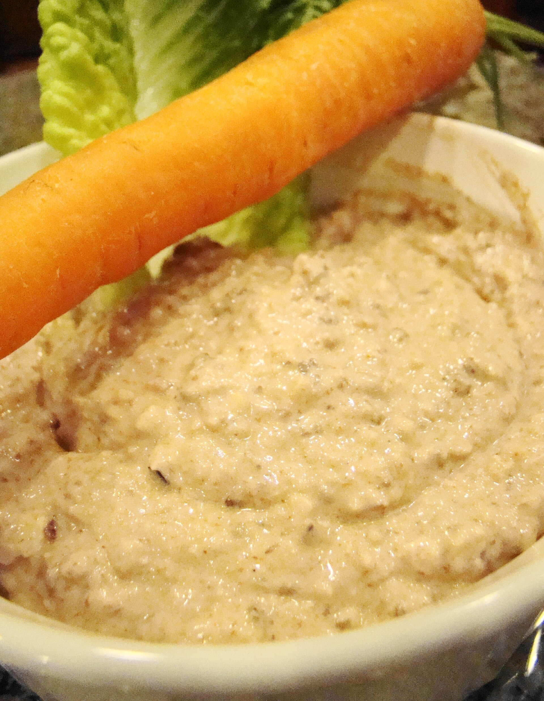

← Todas las categorías
Picoteo sano
Combinaciones ligeras y sencillas para picar o completar una comida.

Hummus con zanahoria
1 ración · 2 min
Combinación
Canónigos con champiñones, cherrys y feta
1 ración · 10-12 min
Preparación sencilla